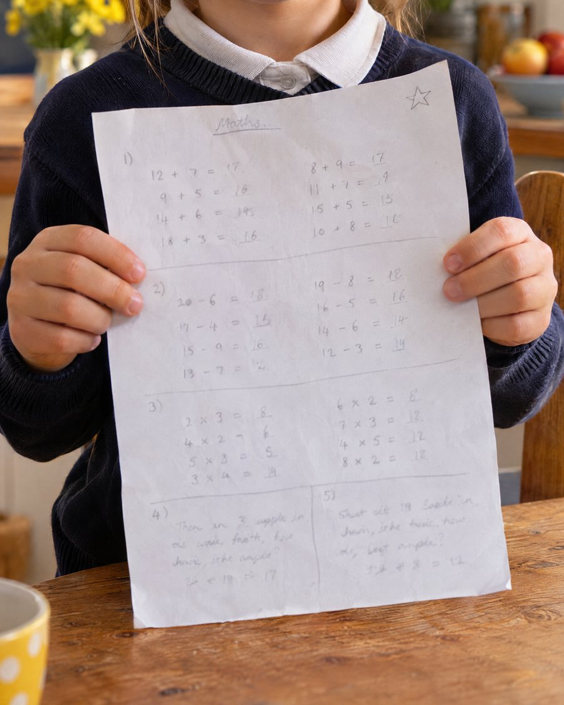

Veliler anlatsın, öğretmen cevaplasın
Bir velinin kendi telefonuyla çektiği 30 saniyelik video, çoğu zaman en özenli reklamdan daha inandırıcı olur. Bu sayfa velilerin içerik üretmesini kolaylaştıran bir sistemi ve sekiz içerik fikrini anlatıyor.


Video Soru: veliden öğretmene, öğretmenden veliye
TasarımMania'nın geliştirmekte olduğu video soru sistemi siteye ve bağlantılara eklenir. Veli soruyu ya da yorumunu video, ses ya da yazıyla bırakır. Öğretmen isterse videoyla cevap verir. Videolar Türkiye'deki sunucuda, şifreli olarak saklanacak.

Merhaba, ben Hakikat Öğretmen. Çocuğunuzla ilgili sorunuzu bir dakikada sorun, ben size cevap vereyim.
1. Öğretmen sorar
Veli, öğretmenin kısa bir karşılama videosunu izler ve cevap yolunu seçer.
Sorunuz nedir?
2. Veli kaydeder
Kayıt telefonda tam ekran açılır. Veli izler, beğenmezse yeniden çeker, sonra gönderir.
Teşekkürler! Cevabımı WhatsApp'tan göndereceğim.
Paylaşım izni ayrı sorulur ve istenince geri alınır.3. İzinle paylaşılır
Paylaşım izni veren velinin sorusu, öğretmenin cevabıyla birlikte haftanın Reels'i olur.
Sitede
Sınıf sayfalarında "Sorunuzu öğretmene sorun" balonu.
PDF'lerin altında
Her Soru Atölyesi PDF'inin sonunda bir karekod: "Bu sorularla ilgili sorunuzu video ile sorun."
Dönem sonunda
Kayıtlı velilere WhatsApp'tan tek bir bağlantı: "Bu yıl çocuğunuzda ne değişti?"
Sekiz UGC fikri
Her fikir velinin rahatça yapabileceği kadar basit. Hiçbirinde çocuğun yüzü, adı ya da okulu yer almaz.

Video Soru'dan gelen bir soru, öğretmenin cevabıyla birlikte haftalık Reels olur. Veli isterse yalnız sesi ya da sorunun yazısı kullanılır.
Haftada 1 · Reels, TikTok, ShortsDönem sonunda velinin 30 saniyelik video yorumu. Sitedeki veli yorumları sayfasına ve sınıf sayfalarına gider.
Ocak ve HaziranVeliler çocuğun çalışma masasının fotoğrafını paylaşır, kişi görünmez. Hikâyede "haftanın masaları" toplanır.
Ayda 1 · HikâyeÇözülmüş PDF'in elde tutulan fotoğrafı. Öğretmen hikâyede teşekkür eder.
Her hafta · HikâyeVelinin konuyu evde nasıl tekrar ettirdiğini gösteren kısa video. Kadrajda eller, kâğıt ve tahta olur.
Ayda 2 · ReelsVelinin karne günü çocuğuna yazdığı not, izinle ve yalnız yazı olarak paylaşılır.
Ocak ve Haziran5. sınıfı bitiren öğrencinin velisi dört yılı bir dakikada anlatır. Yeni 2. sınıf velileri için en güçlü kanıt bu olur.
Haziran · YouTube ve siteBir veli sorusuna TikTok'un "yorumla cevap" özelliğiyle video cevabı verilir. Soru sahibi izinle anılır.
Haftada 1 · TikTokKurallar baştan yazılı
Çocuk görünmez
Paylaşılan içerikte çocuğun yüzü, adı, okulu ve sınıf listesi yer almaz. Eller, kâğıt ve ses yeterlidir.
İzin ayrı ve geri alınabilir
Video göndermek ile videonun paylaşılması ayrı izinlerdir. Veli izni istediği zaman geri alır, içerik kaldırılır.
Yayından önce kontrol
Her içerik paylaşılmadan önce izlenir. Kişisel bilgi, başka kurum adı ya da abartılı vaat varsa kesilir.
Karşılığında hediye yok
Yorum ya da video, indirim veya hediye karşılığında istenmez. Böylece içerik samimi kalır.
Fiyat, görüşmeden sonra netleşir
Video Soru sisteminin kurulumu, aylık cevap hacmi ve UGC içeriklerinin kurgusu konuşulduktan sonra teklif verilir.